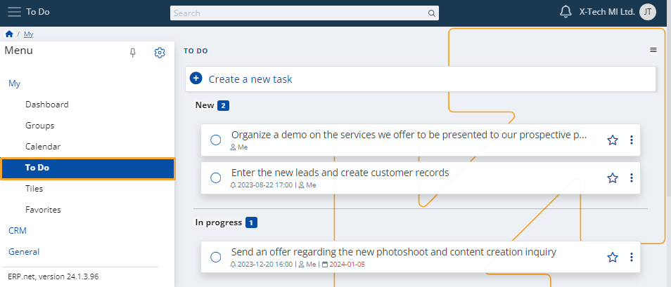
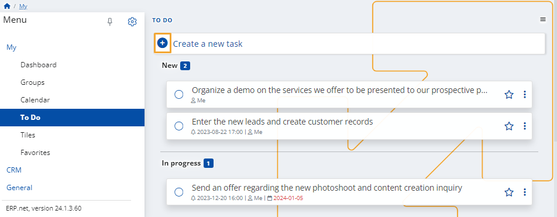
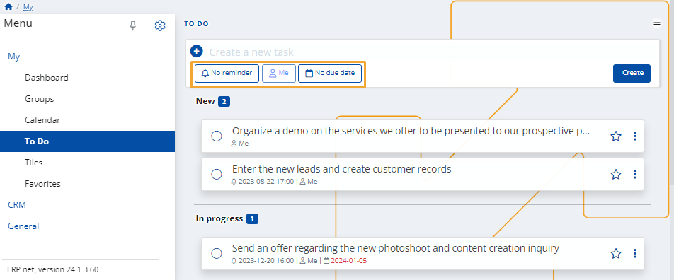
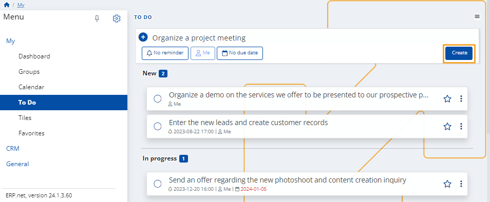
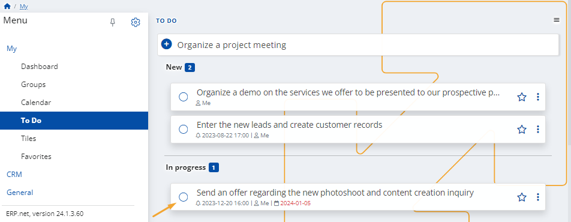

To Do
Within this module, you have the ability to create personal tasks.
These can be useful for reminders or meetings, allowing you to stay in touch with everything related to your work.
Depending on their completion status, tasks are categorized as New, In Progress, and Completed.

When creating a task within a social group, you also have the ability to assign it to another member of that group.
Create a task
To begin adding a new task, click the circular + button.

You can include both a reminder and a due date for the task.

To finish adding your task, click the Create button.
It will be placed in the New category.

Complete a task
To complete a task, click on the circular button on its left to mark it as done.
It will be placed in the Completed category.

Note
The screenshots taken for this article are from v24 of the platform.